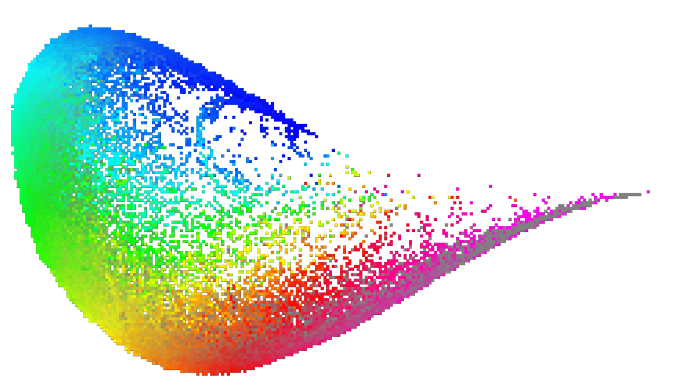
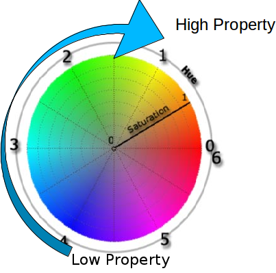
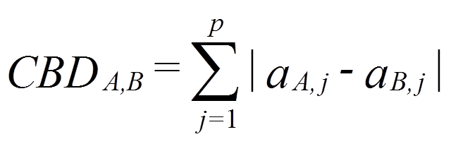
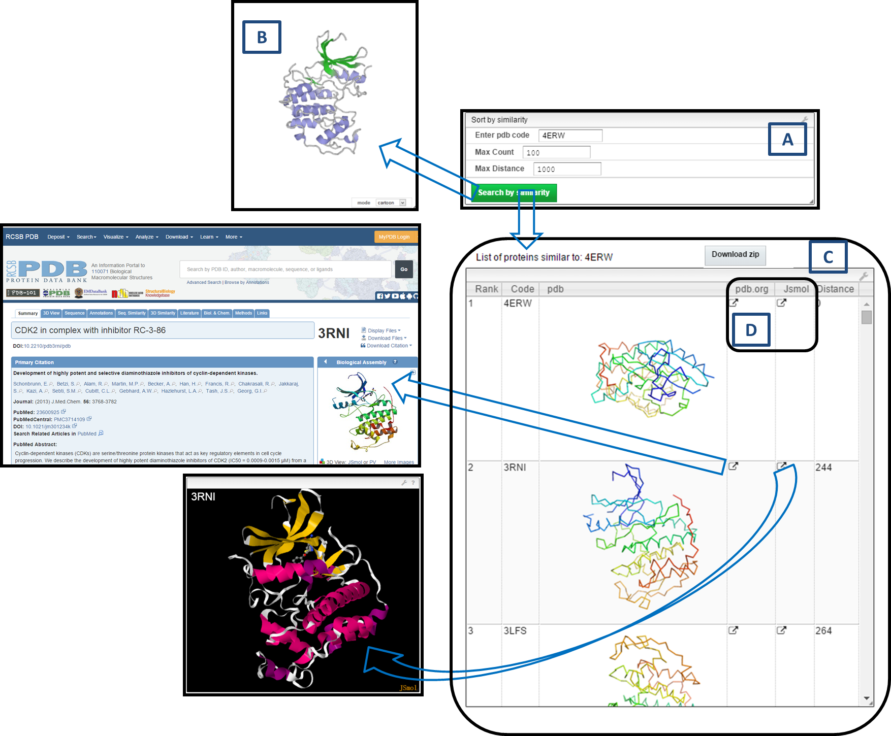

|
PDB-Explorer is a web application for the interactive visualization of chemical space of RCSB
Protein Data Bank (PDB) characterized by protein shape fingerprint (3DP) and shape similarity
search for molecules in PDB. The chemical space herein represented as 3DP PCA maps. PDB-Explorer
contains X-ray structures from PDB, which is updated daily with the latest PDB additions,
ensuring up-to-date coverage.
Molecules in PDB-Explorer
The X-ray molecules in the application are biological assemblies defined by author. The
application provides ribbon images of these molecules using PYMOL. The user can further observe
3D model of molecules by PV viewer or JSMOL visualization window. The molecule presented in
PV/JSMOL is cartoon mode, while user can change the representation scheme using the options on
right side. In the case of PDB entries with no secondary structures or containing only alpha
carbons, the program generated empty images (e.g. PDB ID 1O55 and 1IVI). These structures cannot
be displayed by PV or JSmol with default cartoon mode. To observe the structures, one can change
the display mode of PV as lines. The JSmol viewer sometimes can detect the secondary structure
for the PDB entries that only contain alpha carbons.
Protein Shape Fingerprint(3DP)
The 3DP fingerprint perceives the spatial distribution of shape, hydrophobicity and charges in
molecular objects across a very broad size range. To know more about 3DP please visit the
reference section.
3DP PCA Maps
It is the representation of PC planes (PC1-PC2 or PC2-PC3 or PC1-PC3) obtained after Principal
component analysis of the 200-dimensional 3DP-similarity space for PDB dataset. All the maps
have been produced on a grid of size 300x300. Each of the map color coded separately using
different properties:
Average heavy atom count of molecules at given point on the map(Heavy atom count).
Average percentage of hydrophobic atom count of molecules at given point on the map(%
Hydrophobic Charge Atom).
Average percentage of negative charge atom count of molecules at given point on the map.(%
Negative Charge Atom).
Average percentage of positive charge atom count of molecules at given point on the map.(%
Positive Charge Atom).
Average molecular volume occupancy (mvo, Å3/atom) of molecules at given point
on the map, a property defined here as the volume of the sphere with a radius corresponding to
the average distance of all atoms to the center of gravity, divided by the total number of atoms
(Molecular Volume Occupancy).
Average normalized PMI value of molecules at given point on the map(nPMI).
Number of molecules occupying given point on the map(Occupancy).
One such map (representation of PC1-PC2 plane) for PDB which is color coded according to heavy
atom count property is shown below.

Figure 1: 3DP PCA map for PDB color coded by Heavy Atom Count property
Color Coding
For color coding we used HSL color space(Figure 2). HSL is short for Hue, Saturation and Luminance
(or brightness). To specify any one color in HSL color space we need three values Viz.
Hue (H) = Specify Color (0-6 or 0-360 degree); Saturation (S) = Saturation level of color and
Luminance= Brightness of color (0-100%)
0=black color, 50=darker version of color, 100=white color. Saturation value of 0 (0%) means "center
of the wheel", e.g. a grey value, whereas a saturation value of 1 (100%) means "at the border of the
wheel", where the color is fully saturated.

Figure 2: HSL color space
Color for any given point on 3DP PCA map was determined by "Average property", "Standard deviation"
and "number of molecules" at that point, which corresponds to Hue, Saturation and Lightness
respectively in HSL color space.
"Average property" at given point determines base color, while shade of specify base color changes
according to "Standard deviation" and "number of molecules" at given point. With increasing
"Standard deviation" color changes more towards the grey scale.
For all the maps lowest "property value" represented by blue color. With the increasing "property
value" color changes from " blue to cyan to
green to yellow to red to magenta ".
Similarity Measure
Similarity Measure is a mathematical calculation that quantifies similarity between two objects
(molecules). In the application presented here, we have used City Block Distance (CBD) to calculate
dis-similarity (distance) of molecules with respect to given query molecule. The list of retrieved
compounds then sorted according to increasing CBD distance.
Once represented in the form of fingerprint(vector), the City block distance between two
molecules(CBDA,B), A and B, with P dimensions is calculated as:

Choose the Map (Select image):
For the list of available maps can be obtained by clicking on the Map "combo box". By default
the "Heavy atom count" map is display. All the maps are of size 300x300 pixels.
Mouse Move:
Moving the mouse over the map will show the following information:
Name: The PDB code of average molecule at the given point on the map
Position: The XY coordinates for the mouse cursor position on the map
Molecule Image: Displays ribbon structure image of average molecule at the given
point on the map
Average: Displays the "average property" at the given point on the map
Deviation: Displays the standard deviation of "average property" at the given
point on the map
Mouse Wheel Motion:
Moving the mouse wheel in forward direction will zoom into the map. While moving the mouse wheel
in backward direction will zoom out of the map.
Mouse Double click:
Double clicking at any given point on the map will provide full view of the map.
Mouse Dragging:
Mouse Dragging will help to move the map in display area.
Mouse Single Click:
Single clicking on one pixel of the map (red droplet) will display the PDB entries occupying the
given point and show their cartoon images in the table of protein list.
Protein List: The molecules in the given point of map are displayed in the order
of PC3 values. "Jsmol" option is available to look 3D structure of selected molecule with JSMOL.
"pdb.org" option will allow you to link the selected molecule to parent PDB database to look for
detail information. Clicking on one table cell of protein list can do furthur shape similarity
search by displaying select PDB code in the "Sort by similarity" box automatically.
Download Zip: Clicking on this option will allow you to save file containing 3D
coordinates for all the molecules occupying the given point on the map.
Drop your PDB file here:
User can upload their molecule in standard PDB format to observe its position on the map (black
droplet) and to search similar molecules from PDB database. The application only considers atoms
assigned as "ATOM" in PDB file. Therefore, the the non-standard residues or organic molecules
which are considered as part of molecular shape, should be written as "ATOM" instead of
"HETATM". One can click the "Drop your pdb file" box, and upload pdb. The similar molecules from
PDB database based on default search condition (Max Count:100; Max Distance:10000) can be showed
in the table of protein list by the ranking automatically.
Lookup a list of PDBs:
This option allows the users to locate one or more molecules of their interest on the map
(yellow droplets).
Sort by similarity:
Search similar molecules for query PDB entry based on CBD value from 3DP. Enter a valid PDB code
and select the search condition. "Max Count" will search for specified number of molecules from
database which are most similar to input query molecule. "Max Distance" will search for similar
molecules from database which are having distance less than or equal to distance specified by
user with respect to query molecule. Click "search by similarity" button and the result will be
displayed in the table below by the ranking. One can observe the position of query molecule on
the map with blue color droplet.
HELP:
Open the Help document in Browser.
Example is shown to observe molecule (4ERW) on the map and use it for similarity searching. 4ERW
is Cyclin-dependent kinase 2.
1) Locate Molecule
Write down the PDB ID in the provided text field of "Lookup a list of PDBs to observe the
position of 4ERW on different maps (yellow droplet).
2) Show Molecules in the Same Pixel
Single clicking the yellow marked pixel on the map allows you to look the molecules occupying
the same point with 4ERW on the map (red droplet). In this expample, 32 molecules are in the
same pixel with 4ERW.

3) Similarity Search
Step 1) Enter PDB code (4ERW)
Write down query PDB code in the "Enter pdb code" of "Sort by similarity".
Step 2) Select the Search Options
Max Count: It will search for specified number of molecules from database which are most
similar to input query molecule. In example below the Max Count set to 100.
Max Distance: It will search for similar molecules from database which are having distance
less than or equal to distance specified by user with respect to query molecule (default value is
1000).
Step 3) Hit "Search by similarity" Button and Wait for Result
Step 4) Result Window
Result window is shown below.

A)shows query enter box and search options.
B)PV viewer panel will automatically display ribbon structure of 4ERW.
C)shows the list of similar molecules retrieved from the PDB database with PDB code, ribbon
image, the ranking, and the distance to query (4ERW).
D)two options are available to observe further information of selected result molecule.
"pdb.org" can open the parent PDB database to look for detail information of select molecule.
"Jsmol" can display 3D structure of selected molecule by JSMOL.
The application works best in Chrome.
Supported browsers:
Chrome (v42), Firefox (v36), Safari 9
(preview).
Safari 8, Internet explorer and Edge are not yet supported.
For any suggestions and questions regarding application please free to contact us at: xian.jin@dcb.unibe.ch
http://www.rcsb.org/
The Protein Data
Bank. H.M. Berman, J. Westbrook, Z. Feng, G. Gilliland, T.N. Bhat, H. Weissig, I.N. Shindyalov,
P.E. Bourne, Nucleic Acids Res. 2000, 28, 235-242.
The MQN-Mapplet:
Visualization of Chemical Space with Interactive Maps of DrugBank. M. Awale, R. van Deursen, J.
L. Reymond, ChEMBL, PubChem, GDB-11 and GDB-13. J. Chem. Inf. Model. 2013, 53, 509-518.
Stereoselective virtual
screening of the ZINC database using atom pair 3D-fingerprints. M. Awale, X. Jin, J. L. Reymond.
J. Cheminform. 2015, 7, 3.
A similarity-based data-fusion approach to the visual characterization and
comparison of compound databases. J. L. Medina-Franco, G. M. Maggiora, M. A. Giulianotti, C.
Pinilla, R. A. Houghten. Chem. Biol. Drug. Des. 2007, 70, 393-412.
|